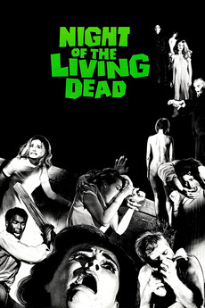
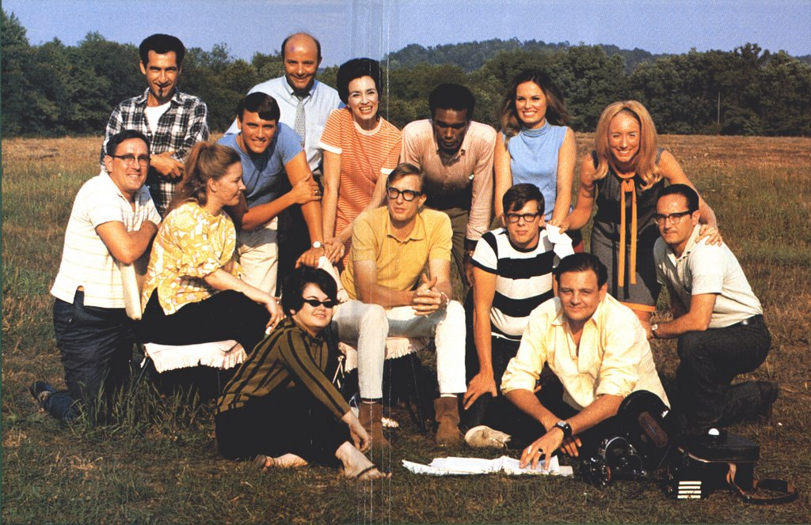
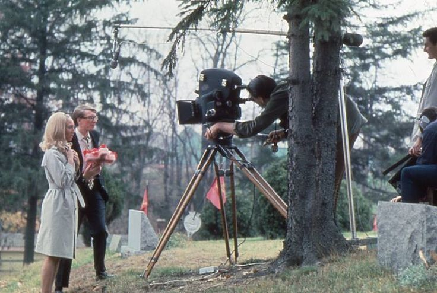

The Zombie Movie
Director: George Romero
Starring: Duane Jones, Judith O’Dea, Karl Hardman, Marilyn Eastman
Runtime: 1h 36m
Other indie recommendations:
Dawn of the Dead (1978)
One Cut of the Dead (2017)
Anna and the Apocalypse (2017)

Production
Though starting out in commercials, Romero branched out into filmmaking and created the independent production company Image Ten with the help of like-minded friends. Approximately $114,000 was raised. Due to the low budget, much of the special effects were fairly simple. For example, blood was chocolate syrup (hidden by the black-and-white photography) and the zombie makeup was mortician’s wax. The story itself took inspiration from Richard Matheson’s sci-fi novel I am Legend.

Influence
Night of the Living Dead may not have been the first zombie movie, but in many ways, it was the first modern zombie movie, as the idea of the zombie apocalypse and the ghoulish flesh-eating undead being only came into fruition with this film. Also, due to its graphic (for its time) violence and the subtle social commentary about contemporary American societal anxieties, many critics dubbed it “subversive” and “groundbreaking”. And as with most influential films, it spawned numerous copycats and paved the way for the zombie movie we know today.
SOURCES:
Pics:
Vox, BFI, Bloody Disgusting (behind-the-scenes photos)
Video:
Fandango
Info: https://livingdead.fandom.com/wiki/Night_of_the_Living_Dead